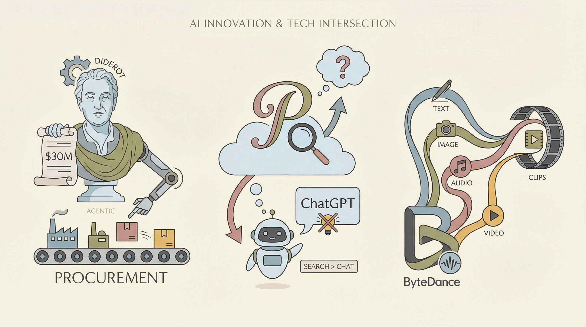

Didero获得3000万美元投资，将制造采购流程自动化
两克伴AIGC日报
2026-02-13 星期五

本期关注：Didero获3000万美元融资推进制造采购自动化，Pinterest搜索量超ChatGPT但业绩承压；字节跳动发布多模态视频生成AI，谷歌推出WebMCP协议构建AI代理互联网；Anthropic的Claude Code营收超25亿美元爆发增长，AntLingAGI推出混合线性架构...
📰 行业动态
Pinterest称其搜索量超过ChatGPT，但业绩不佳导致股价下跌
字节跳动发布新一代AI模型，可基于文本、图像、音频和视频生成视频剪辑
Google推出WebMCP协议，旨在为AI代理构建互联网
🔥 今日焦点
Anthropic公司近日宣布，其旗下产品Claude Code自2025年5月向公众开放以来，营收增长迅猛，目前已超过25亿美元，较2026年初翻了一番。同时，每周活跃用户数量也自1月1日起翻倍。这一成绩的背后，是Anthropic在AI领域的持续深耕和创新。
Claude Code的成功，标志着AI领域在生成式AI和AI代理方面的重大突破。作为一款面向公众的AI产品，Claude Code在短时间内实现了快速增长，这不仅展示了其强大的技术实力，也反映了市场对AI技术的巨大需求。
AntLingAGI近日发布了Ring-1T-2.5，这是首个混合线性架构的1T思考模型。该模型在效率上实现了突破，内存消耗降低了10倍。Ring-1T-2.5在IMO25和CMO25测试中均取得了优异成绩，分别达到35/42和105/126。此外，该模型具备代理性，原生支持Claude Code和OpenClaw，并在IMOAnswerBench、GAIA2-search等多个领域达到开放SOTA水平。
Ring-1T-2.5的发布对AI领域具有重要意义。首先，它标志着混合线性架构在AI模型设计中的成功应用，为后续模型开发提供了新的思路。其次，该模型在效率上的提升，有助于降低AI模型的运行成本，推动AI技术的普及。最后，Ring-1T-2.5在代理性方面的突破，为AI模型在实际应用中的自主决策能力提供了有力支持。
近日，一位名为jontsai的AI开发者在其个人博客上分享了其最新项目——OpenClaw Command Center。该项目灵感来源于著名游戏《星际争霸》，旨在构建一个集成的任务控制平台，用于管理多达100个AI代理的任务执行。核心内容概述为：OpenClaw Command Center通过模拟军事指挥中心，为AI代理提供任务分配、监控和协调功能，实现高效协同作业。
该项目的重要性在于，它为AI领域提供了一个全新的视角和解决方案，以应对日益复杂的任务管理和协同问题。在人工智能快速发展的今天，如何高效地组织和管理大量AI代理，成为了一个亟待解决的问题。OpenClaw Command Center的推出，为这一领域提供了有益的探索和实践。
Spotify近日宣布，其顶尖开发者自去年12月以来未曾编写过一行代码，这得益于公司内部AI系统Claude Code和Honk的助力。这一消息揭示了AI在软件开发领域的巨大潜力，引发了业界的广泛关注。
Spotify表示，Claude Code和Honk通过自动化和智能化手段，大幅提升了开发效率。在AI的帮助下，开发者可以专注于更具有创造性和战略性的任务，从而推动产品创新。这一举措不仅提高了开发速度，还降低了人力成本。
📚 深度长文
《Introduction to Agentic AI》第一章“Foundation”由Tom Yeh教授撰写，深入探讨了代理人工智能（Agentic AI）的基础理论和发展方向。文章核心观点在于强调代理AI的自主性和适应性，认为其是未来人工智能发展的关键。作者从多个角度阐述了代理AI的定义、特点以及与传统人工智能的区别，并提出了构建代理AI的理论框架。
文章的关键论据包括：首先，代理AI具有自主决策能力，能够根据环境变化自主调整行为；其次，代理AI具备学习能力，能够从经验中不断优化自身性能；最后，代理AI具有适应性，能够在复杂多变的场景中生存和发展。这些特点使得代理AI在解决实际问题方面具有巨大潜力。
《Join us for Interrupt: The Agent Conference》一文由LangChain Accounts撰写，聚焦于探讨AI领域前沿的“Interrupt - The Agent Conference”大会。此次大会汇聚了超过1000名开发者、产品领导者、研究人员和创始人，共同探讨代理技术的发展趋势和应用前景。文章深入剖析了当前生产环境中实际有效的技术实践，并展望了代理技术未来的发展方向。阅读本文，读者将获得以下价值：
1. 核心观点：大会旨在分享代理技术的最新进展，探讨其在实际应用中的有效策略。
2. 关键论据：通过汇集行业精英的智慧，文章揭示了代理技术在生产环境中的实际应用案例和成功经验。
3. 深度与独特见解：文章不仅提供了行业现状的全面分析，还从多个角度探讨了代理技术未来的发展趋势，为AI从业者提供了宝贵的参考。
在最新的科技前沿，高德连发两款全面超越SOTA（State-of-the-Art，即最高技术水平）的ABot具身基座模型，标志着“GPT时刻”可能即将到来。文章深入探讨了具身智能的发展趋势，指出这两款模型在自然语言处理和具身交互领域的突破性进展。关键论据包括模型在复杂场景下的高准确率和强适应性，以及其与真实世界交互的深度融合。阅读价值在于，文章不仅揭示了具身智能领域的最新技术动态，还提供了对人工智能未来发展方向的专业见解。文章深度剖析了具身智能的挑战与机遇，为AI从业者提供了宝贵的参考和启示。
🛠️ 产品推荐
Show HN：一款由AI智能代理运营的独立游戏工作室。该工作室通过AI技术，自主设计、开发和发布游戏，旨在为用户提供多样化的游戏体验。该产品利用AI算法，实现游戏创意的无限拓展，为玩家带来新鲜感与挑战。对于游戏开发者而言，Show HN提供了一个全新的视角，探索AI在游戏领域的应用潜力，助力游戏行业创新发展。
---
EPI是一款开源的AI执行艺术品格式，旨在解决AI系统在生产环境中出现问题时无法提供不可篡改执行记录的痛点。EPI通过记录执行步骤、输入输出、元数据和签名，生成可验证的执行艺术品包，实现可回放和审计。该产品为AI基础设施工程师和平台团队提供了一种安全、可靠的AI执行追踪方案。
---
Cobalt是一款开源的AI代理单元测试工具，旨在为AI开发者提供高效、可靠的测试解决方案。该产品通过模拟真实场景，对AI代理进行单元测试，确保其稳定性和准确性。Cobalt的引入，有助于开发者快速定位和修复AI代理中的缺陷，提高AI系统的可靠性和性能。对于技术从业者而言，Cobalt能够有效提升AI开发效率，降低开发成本，助力AI技术的创新与发展。